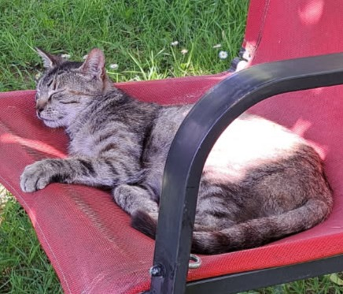
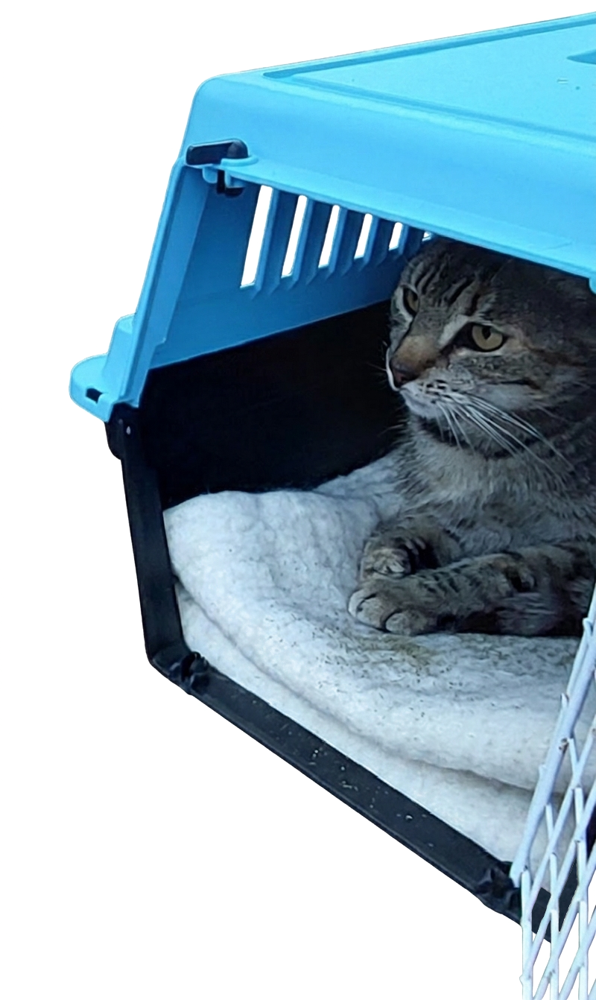

🐾 ESPÉRANCE CHERCHE SON HAVRE DE PAIX 🐾
Un cœur à soigner, une vie douce à lui offrir


Qui est Espérance ? Espérance est une jeune chatte tricolore d'environ 4 ans (née en juin 2022), qui vit actuellement à Orléans. Après une histoire de vie complexe et une adoption difficile, elle s'est retrouvée dehors.Nous sommes ses voisins. Nous faisons tout notre possible pour la nourrir et veiller sur elle, mais notre situation ne nous permet pas d'assumer les soins réguliers et lourds dont elle a besoin pour guérir.
 Nous lui cherchons donc une personne patiente et attentionnée, ayant les ressources financières et le cœur
nécessaires pour lui offrir la vie sereine qu'elle mérite.
Nous lui cherchons donc une personne patiente et attentionnée, ayant les ressources financières et le cœur
nécessaires pour lui offrir la vie sereine qu'elle mérite.
Comment l'aider ?
Espérance a besoin d'un véritable parrainage de vie. Si vous disposez d'un extérieur calme et que vous avez
la capacité d'assumer son suivi cardiaque régulier, vous pouvez l'accueillir.
Elle a besoin d'un environnement calme et patient pour s'épanouir en toute tranquillité, loin des traumatismes passés de sa vie dans les rues du quartier.

Dossiers vétérinaires complets disponibles à la consultation. N'hésitez pas à nous contacter pour organiser une rencontre et venir faire sa connaissance à Orléans.